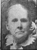
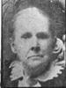

Fanny Jane Roundy Willis Family Information and Photos
Home
Histories
Charts
Photos
Maps
Restricted
News
Info
Contact
| <--(return)-- |   | Shadrach Roundy and Betsy Quimby | ----> |    | Lorenzo Wesley and Priscilla Parrish  ----> |
 
| John Henry Willis and Fannie Jane Roundy
|
Fanny Jane Roundy Willis and Family
Fannie Jane was the oldest child of Lorenzo W. and Priscilla Roundy. She was born in Centerville, Utah, December 21, 1858. There she lived until she was nine years old, near the shores of Great Salt Lake.
Fannie Jane passed through the experiences common to pioneer girls of Utah. She and her sisters gleaned wheat and got enough money to buy a red calico dress with white dots on it. She taught school one summer. At other times she filled quilts for her mother, who could weave "jean" dress goods and coverlets, at the same time raising a family and cooking over a fireplace. Fannie and her crowd of girls used to have spinning bees. They knitted all their own stockings and corded their own "bats."
It was at Kanarra that she met John Henry Willis, who later became her husband. They went to school together most of their school days. They were married in the St. George Temple on the 29th of November, 1878, and lived in Kanarra for a year after they were married. They moved to the Willis Ranch in December. On the seventeenth of April, Bertha, their first child, was born. They had eleven children, six boys and five girls, losing one child at the age of seven and two more after they were grown to manhood and womanhood. Her husband and two sons filled church missions, one son going to Australia; another holding the office of Bishop; and still another son being in the World War, and going to Siberia. She had held many positions in the Church such as president of the Primary and treasurer of the Relief Society. In 1929 she received serious injuries in an automobile accident and was disabled for some time.
She is now eighty-one years of age and is well and always cheerful, still keeping house for herself and her son. Her children were named: Bertha Jane (Frost), John Lorenzo, Walter Marion (deceased), Hugh, Belva (Ballard), Priscilla (Wasson), Frances (deceased), Merrill, Cleon Ewart (deceased), Verlye (Thomas), and Myron Shadrach. She has thirty-nine living grandchildren and ten great-grandchildren.